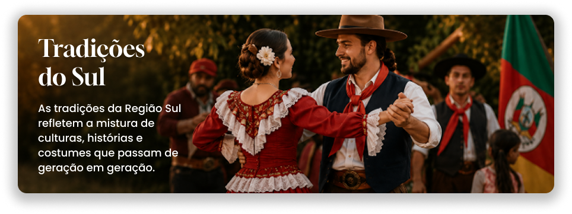

Essência do Sul
A cultura da Região Sul é marcada pela diversidade de tradições, costumes e influências que ajudaram a construir sua identidade. Nesta seção, explore manifestações culturais, festividades, gastronomia, música, dança e histórias que representam a riqueza cultural dos estados do Paraná, Santa Catarina e Rio Grande do Sul.

"A cultura mantém vivas as histórias, os costumes e as tradições que conectam gerações."
— Equipe O Sulista

As tradições da Região Sul refletem essa diversidade cultural formada pela influência de povos indígenas, europeus e tropeiros ao longo dos séculos. Presentes no cotidiano, nas festas e nos costumes locais, essas manifestações ajudam a preservar a identidade da região e a transmitir conhecimentos de geração em geração. Entre as tradições mais conhecidas estão o chimarrão, as danças folclóricas, as festas típicas e a valorização da cultura gaúcha, catarinense e paranaense.
Tradições em Destaque
A Região Sul preserva costumes que representam sua história e diversidade cultural. Nesta seção, conheça algumas das tradições mais marcantes da região, transmitidas entre gerações e presentes no cotidiano de milhões de pessoas. Das celebrações típicas às manifestações artísticas e gastronômicas, cada tradição ajuda a contar a história e fortalecer a identidade cultural do Sul do Brasil.
Principais Festas Típicas
Descubra novos destinos, conheça curiosidades e encontre inspiração para explorar as paisagens, culturas e tradições da Região Sul.
Conheça as Danças Típicas
As danças tradicionais gaúchas representam costumes e histórias do povo sulista. Apresentadas em festivais e Centros de Tradições Gaúchas (CTGs), ajudam a preservar a identidade cultural da região.
Expressões Populares
A linguagem também faz parte da cultura. Na Região Sul, diversas gírias e expressões são utilizadas no dia a dia e ajudam a transmitir características, costumes e a identidade de seus habitantes. Conhecer essas palavras é uma forma divertida de se aproximar da cultura local.
Costumes Regionais
Os costumes e tradições da Região Sul são profundamente influenciados pelas culturas gaúcha, açoriana, alemã e italiana, variando bastante entre o campo, o litoral e as grandes cidades.